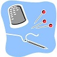

Skill Description Resources Water How to sterilize and collect water Collect rain water in storage containers and Get water from streams, lakes and rivers. Make sure to collect upstream from any settlements.Once collected you will need to sterilize your water for consumption. How to make a fire If you have matches or a lighter, build kindling in the shape of a pyramid and light. Then stack the larger pieces of wood around the kindling. http://www.wikihow.com/Start-a-Fire-with-Sticks Sewing 101 You will need to be able to mend and sew clothing and gear now that stores are gone. Simple hand sewing will do. How to sew First aid!!!!! After water and fire, this is very important. There aren't any doctors. Preparing now could save your life tomorrow. Take first aid classes at the Red Cross. Gardening Know how to grow your own food Hunting Know how to kill your own food Learn to hunt, it just might save your life. Backcountry cooking You will need to learn to cook on the go and survive without ovens and stoves. You will also need to be able to identify wild edible plants for supplementing your meals. Here are some general ideas.